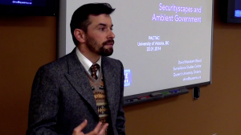

PACTAC Video: David Murakami Wood
David Murakami Wood -- Vanishing Surveillance: Securityscapes and Ambient Government

We are very pleased to announce that the archived video from Professor David Murakami Wood's recent presentation titled "Vanishing Surveillance: Securityscapes and Ambient Government" is now available at the PACTAC website:
http://pactac.net/2014/03/vanishing-surveillance-securityscapes-and-ambient-government/
Professor David Murakami Wood is Canada Research Chair (Tier II) in surveillance studies at Queen's University. Professor Wood's research focuses on the politics, aesthetics, and social relations around global(izing) surveillance, risk, and security. His work is cross-cultural and comparative, and involves working in cities in Japan, Brazil, and Europe. He also studies science fiction writing and film. His interests are in process philosophy, actor-network theory, post-panopticism, and concepts of openness/closure, transparency/opacity, and publicity/privacy. He is the editor-in-chief of Surveillance and Society, the international journal of surveillance studies, and a founding member of the Surveillance Studies Network. In 2006, he coordinated the influential Report on the Surveillance Society for the UK Information Commissioner.